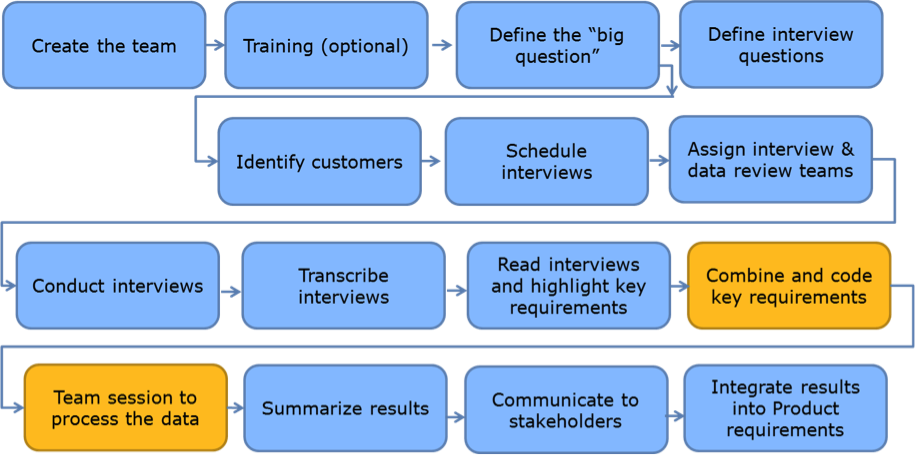
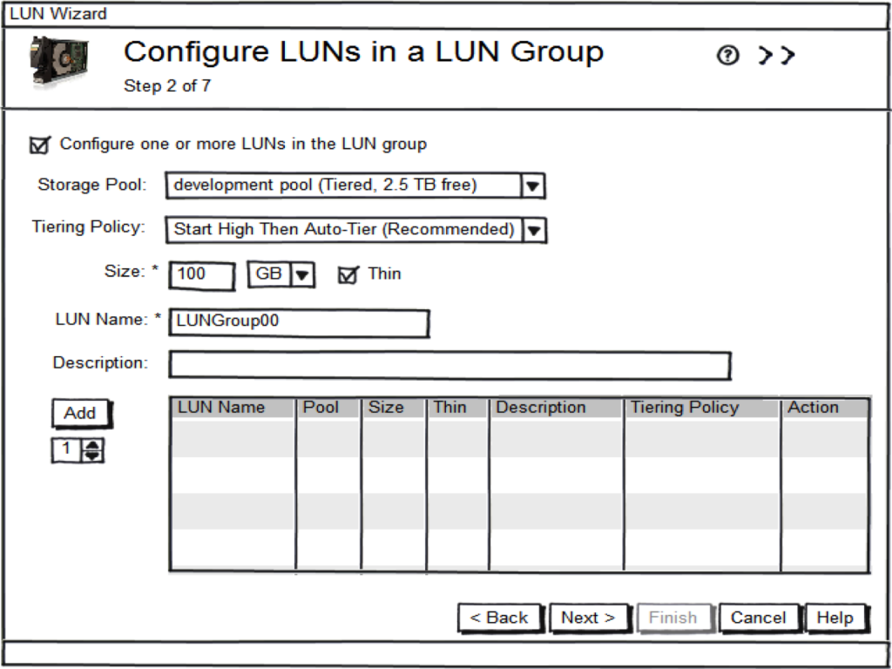
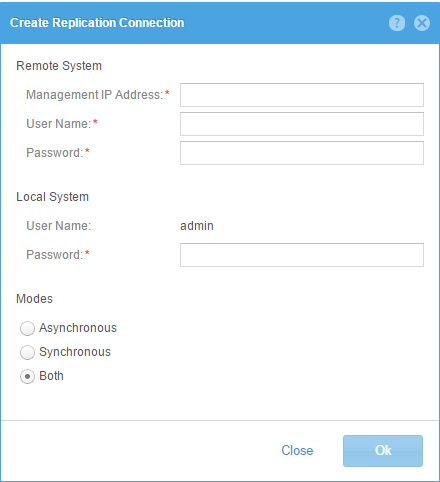
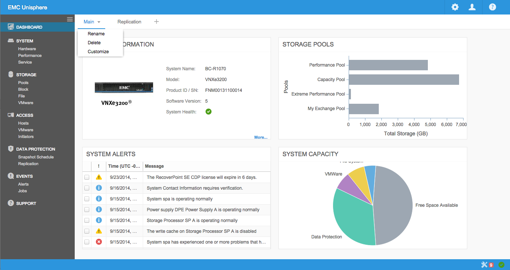
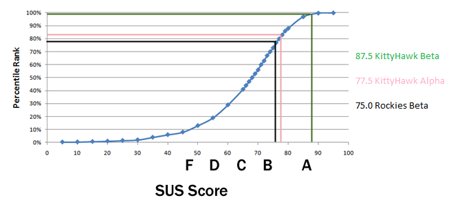
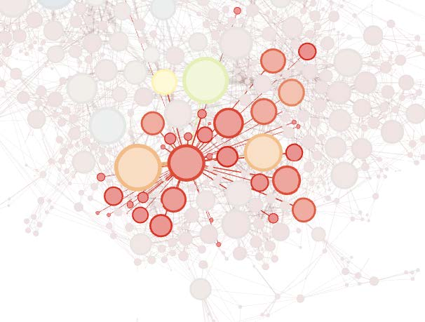
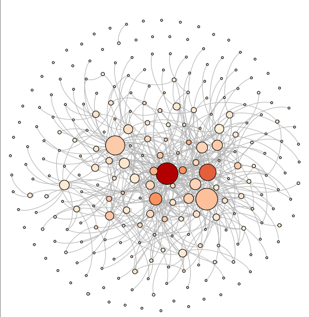
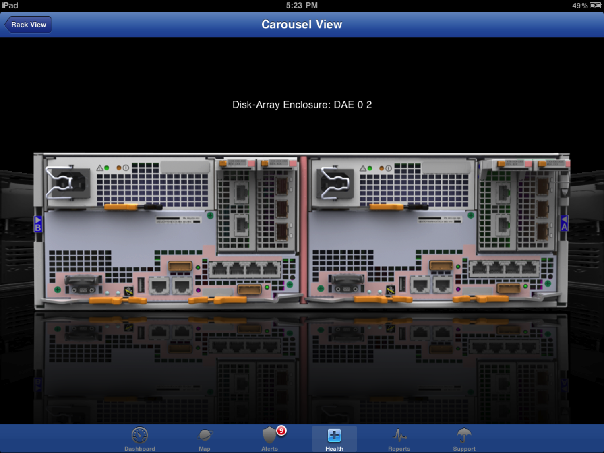
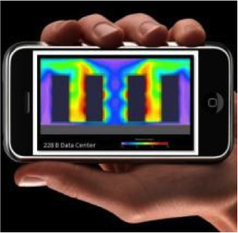

Portfolio
User Experience Design
-
Creative Innovation using a Voice of the Customer Process
In EMC’s Unified Storage Division, we have begun to apply a simplified version of the Lean Six Sigma Voice of the Customer Kano process to our early innovation projects. I co-authored a paper describing one emerging market project where I utilized this House of Quality process, describing results, benefits, and lessons learned.
-
UxD Case Study for VNXe 3200
I worked on the interaction design for the LUN Groups feature of the EMC VNXe 3200 product. We iterated through several design options to create Balsamiq mockups, and then ran usability testing with customers and internal users. After analyzing the test results, finding and fixing several problems, I updated the mockups and worked with the developer to create a prototype for another round of usability testing. This was better but still confusing in a few areas, so we improved and tested once again. For details, take a look at the case study blog post.
-
Implementation Review
After a GUI developer implements a design, I typically review the implementation. In one case study of an iterative review/revision session with the GUI developer after implementing a simple form, we went through a few iterations to improve it.
One of my design principles minimalism - less is more. Basically reducing the design to only the most essential elements. As Jakob Neilsen says "Every extra unit of information in a dialogue competes with the relevant units of information and diminishes their relative visibility." -
Dashboards
 -
Measuring Usability
It's tough to objectively measure overall usability of a product. One well respected standard is the System Usability Scale (SUS). This is a simple 10 item questionnaire with a very high confidence interval for a low number of samples.
We set a minimum SUS score of 80 from the beta site users before we shipped the final product.
{kind=link}
Data Analytics and Visualization
-
EMC Patent Investigation
EMC Corporation was granted 2,917 US patents from 1990-2013. I was curious about how long it takes from filing to granting (3.74 years), how many individual inventors there are (2032), where they were located (53% in Massachusetts), who has the most patents (Natan Vishlitzky), how they worked together and influenced each other, etc. Also, I wanted to learn more about using Python, R, Gephi, iGraph, and Pajek.
-
Socialcast
Our division used an enterprise social networking platform called Socialcast from VMWare. One of the nice features is a RESTful API to run data analytics on the users, posts, comments, etc. I wrote some python scripts to mine the Socialcast and LDAP account data, merge and transform the data into csv and GDF formats. I used Gephi and Excel to visualize trends and relationships in posting and commenting.
-
Mapping University Activity Over Time

I used a RESTful API and a python script to extract and transform university related activity for EMC, including lectures, joint projects, etc. I imported the information into CartoDB to create an animated world map showing activity by date.
UI Projects
-
Unisphere Mobile iPad App
Unisphere Mobile is a native iPad app written in Objective C. It meets the most common mobile use cases for storage array management via dashboard, reports, alerts, support, etc. I started the coding and lead a small international team to complete the app. Unisphere Mobile was featured in an EMC World keynote address.
-
Augmented Reality for Storage Management
Mobile apps such as Yelp Monocle, World Lens and Google Googles use the camera, GPS, and compass to show virtual items in a real world. Why not do the same for storage management?
Customers can point their iPhone camera at a VNX array and overlay virtual displays of power consumption, temperature, hardware faults, IOPs, CPU utilization, remaining capacity, etc. Or point their Android camera at a VNXe array and see a pie chart breaking down storage utilization by application. Or show bytes flowing from a host to an array.